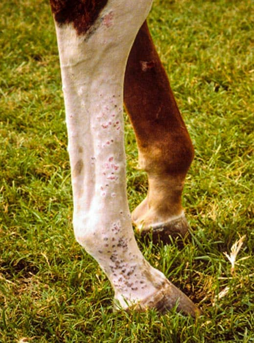
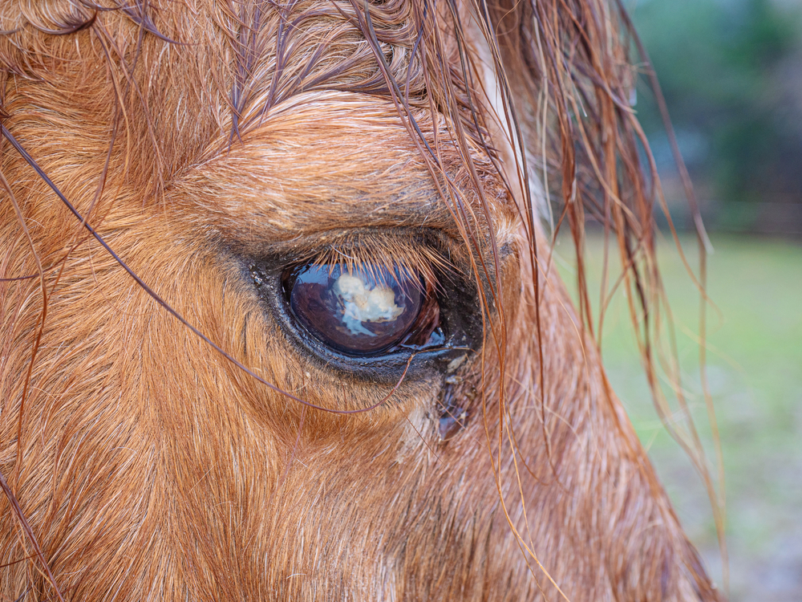

Encyclopedia of Horse Diseases
A comprehensive guide to identifying equine diseases, their symptoms, and treatment methods.

A comprehensive guide to identifying equine diseases, their symptoms, and treatment methods.

Ear diseases can result from infections or parasites like mites. Horses may shake their heads or show discomfort when touched. Cleaning and veterinary care are important to avoid complications.

Leg diseases are very common due to constant movement and stress. They include tendon injuries, fractures, and joint problems. Horses may show lameness, swelling, or pain while walking. Rest and proper care help recovery.

Skin diseases are often caused by parasites, fungi, or allergies. Signs include itching, hair loss, redness, or wounds. Good hygiene and regular grooming can help prevent these issues.
Head diseases in horses may affect the brain, nerves, or sinuses. Common problems include infections, injuries, and neurological disorders. Symptoms may include head tilting, poor balance, or unusual behavior. Early diagnosis is important for proper treatment.

Eye diseases can affect vision and may become serious quickly. Common issues include infections, injuries, or ulcers. Symptoms include redness, tearing, or sensitivity to light. Immediate treatment is recommended.

Nose diseases often involve respiratory infections or allergies. Horses may have nasal discharge, coughing, or breathing difficulty. Clean environments help reduce risks.

Tumors in horses can be benign or malignant. They may appear as lumps on the skin or inside the body. Early detection helps in managing the condition effectively.

Stomach diseases include colic, which is one of the most common problems in horses. Symptoms include pain, restlessness, and loss of appetite. Proper feeding and care are essential for prevention.

Joint diseases affect movement and flexibility. They include arthritis and inflammation. Horses may show stiffness or difficulty moving. Regular exercise and care can improve joint health.
Get professional veterinary guidance specifically designed to preserve the heritage of horses.